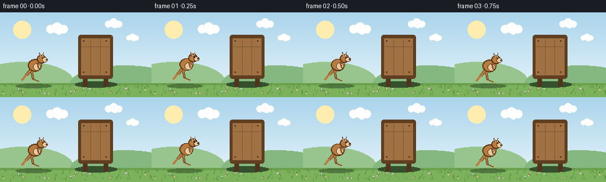

CODING AGENTS AS PIXEL WORLD MODELS
traex/Seed-2.1-Pro-0915 · dynamic_spatial_relationship_0034
点击播放 · 原生 RGB 像素
逐轮保存的候选
回放视频、检查图与代码变化。
每份候选均可单独播放。实际图片检查记录在下方工具轨迹中。
候选 01播放与检查图
点击播放 · 原生 RGB 像素

展开代码变化
--- 上一保存版本
+++ 本次保存版本
@@ -0,0 +1,215 @@
+"""Procedural text-to-video generation.
+
+Scene: a kangaroo stands on the left of a wooden board, then hops in an arc
+and lands behind the board, which occludes it (draw order encodes depth).
+"""
+from pathlib import Path
+import math
+
+import numpy as np
+from PIL import Image, ImageDraw
+
+import artifact_io
+
+W, H, N, FPS = 256, 144, 20, 4.0
+GROUND_Y = 120
+
+# Palette
+SKY_TOP = np.array([170, 212, 235.0])
+SKY_BOT = np.array([233, 246, 251.0])
+GRASS = (124, 178, 92, 255)
+GRASS_EDGE = (108, 162, 78, 255)
+GRASS_BLADE = (92, 142, 70, 255)
+HILL_FAR = (151, 197, 141, 255)
+HILL_NEAR = (132, 184, 128, 255)
+
+ROO_OUTLINE = (94, 56, 26, 255)
+ROO_FUR = (184, 123, 64, 255)
+ROO_LIGHT = (234, 201, 156, 255)
+ROO_DARK = (43, 29, 20, 255)
+
+BOARD_FRAME = (96, 62, 34, 255)
+BOARD_POST = (82, 52, 28, 255)
+BOARD_PLANK = (159, 113, 67, 255)
+BOARD_SEAM = (128, 88, 50, 255)
+BOARD_NAIL = (70, 45, 25, 255)
+
+BOARD_X0, BOARD_X1 = 132, 190
+BOARD_TOP, BOARD_BOT = 38, 112
+
+
+def make_background():
+ t = np.linspace(0.0, 1.0, H)[:, None]
+ sky = (SKY_TOP * (1.0 - t) + SKY_BOT * t).astype(np.uint8)
+ img = Image.fromarray(np.repeat(sky[:, None, :], W, axis=1), "RGB").convert("RGBA")
+ d = ImageDraw.Draw(img)
+
+ # Sun and clouds
+ d.ellipse([22, 14, 52, 44], fill=(255, 237, 176, 255))
+ for cx, cy, s in [(96, 26, 1.0), (192, 18, 0.8), (224, 42, 0.6)]:
+ for dx, dy, r in [(-11, 2, 7), (0, 0, 9), (11, 2, 7), (3, 5, 6)]:
+ x0, y0 = cx + (dx - r) * s, cy + (dy - r) * s
+ d.ellipse([x0, y0, x0 + 2 * r * s, y0 + 2 * r * s], fill=(255, 255, 255, 232))
+
+ # Rolling hills behind the ground line
+ d.ellipse([-46, 84, 124, 152], fill=HILL_FAR)
+ d.ellipse([118, 90, 304, 152], fill=HILL_NEAR)
+
+ # Ground
+ d.rectangle([0, GROUND_Y, W, H], fill=GRASS)
+ d.rectangle([0, GROUND_Y, W, GROUND_Y + 3], fill=GRASS_EDGE)
+
+ rng = np.random.default_rng(42)
+ for _ in range(110):
+ gx = int(rng.integers(0, W))
+ gy = int(rng.integers(GROUND_Y + 3, H - 1))
+ d.line([(gx, gy), (gx + int(rng.integers(-1, 2)), gy - int(rng.integers(2, 5)))],
+ fill=GRASS_BLADE)
+ for _ in range(14):
+ fx = int(rng.integers(4, W - 4))
+ fy = int(rng.integers(GROUND_Y + 8, H - 6))
+ petal = tuple(int(v) for v in rng.choice(
+ [np.array([240, 200, 90]), np.array([235, 150, 170]), np.array([210, 180, 240])]))
+ d.ellipse([fx - 1, fy - 1, fx + 1, fy + 1], fill=petal + (255,))
+ d.point((fx, fy), fill=(255, 244, 200, 255))
+
+ # Board's static contact shadow
+ d.ellipse([BOARD_X0 - 6, 117, BOARD_X1 + 8, 127], fill=(52, 80, 44, 120))
+ return img
+
+
+def draw_board(d):
+ # Posts first so the panel covers their tops.
+ for px in (140, 175):
+ d.rectangle([px, 102, px + 7, 125], fill=BOARD_POST)
+ d.rounded_rectangle([BOARD_X0, BOARD_TOP, BOARD_X1, BOARD_BOT], radius=4, fill=BOARD_FRAME)
+ d.rectangle([BOARD_X0 + 5, BOARD_TOP + 6, BOARD_X1 - 5, BOARD_BOT - 6], fill=BOARD_PLANK)
+ for sx in (BOARD_X0 + 21, BOARD_X0 + 37):
+ d.line([(sx, BOARD_TOP + 7), (sx, BOARD_BOT - 7)], fill=BOARD_SEAM)
+ d.line([(BOARD_X0 + 6, BOARD_TOP + 20), (BOARD_X1 - 6, BOARD_TOP + 20)], fill=BOARD_SEAM)
+ for nx in (BOARD_X0 + 9, BOARD_X1 - 11):
+ for ny in (BOARD_TOP + 10, BOARD_BOT - 11):
+ d.ellipse([nx - 1, ny - 1, nx + 1, ny + 1], fill=BOARD_NAIL)
+
+
+def outline_ellipse(d, cx, cy, rx, ry, fill, outline=ROO_OUTLINE, pad=1.6):
+ d.ellipse([cx - rx - pad, cy - ry - pad, cx + rx + pad, cy + ry + pad], fill=outline)
+ d.ellipse([cx - rx, cy - ry, cx + rx, cy + ry], fill=fill)
+
+
+def draw_kangaroo(base_img, ox, feet_y, scale, tuck, squash=1.0):
+ """Draw a right-facing kangaroo. Local space: origin at the feet, y up."""
+ d = ImageDraw.Draw(base_img)
+
+ def P(x, y):
+ return (ox + x * scale, feet_y - y * scale * squash)
+
+ def line(points, width, fill):
+ d.line([P(x, y) for x, y in points], fill=fill,
+ width=max(1, int(round(width * scale))), joint="curve")
+
+ def ellipse(x, y, rx, ry, fill, pad=1.6):
+ cx, cy = P(x, y)
+ outline_ellipse(d, cx, cy, rx * scale, ry * scale * squash, fill, pad=pad)
+
+ def polygon(points, fill):
+ d.polygon([P(x, y) for x, y in points], fill=fill)
+
+ # Hind leg: blends a standing pose with a tucked hopping pose.
+ knee = (-3 + 10 * tuck, 17 + 3 * tuck)
+ ankle = (-1 + 10 * tuck, 7 + 5 * tuck)
+ toe = (9 - 5 * tuck, 3 + 6 * tuck)
+ hip = (0, 24)
+ line([hip, knee], 5.4, ROO_OUTLINE)
+ line([hip, knee], 3.6, ROO_FUR)
+ line([knee, ankle], 4.0, ROO_OUTLINE)
+ line([knee, ankle], 2.4, ROO_FUR)
+ line([ankle, toe], 3.0, ROO_OUTLINE)
+ line([ankle, toe], 1.6, ROO_FUR)
+
+ # Tail: sweeps back, lifts while tucked.
+ tip = (-20 + 2 * tuck, 5 + 17 * tuck)
+ control = (-12 + 2 * tuck, 14 + 10 * tuck)
+ tail_pts = [(-5, 22), control, tip]
+ line(tail_pts, 5.2, ROO_OUTLINE)
+ line(tail_pts, 3.2, ROO_FUR)
+
+ # Body, belly and front arm.
+ ellipse(3, 30, 10, 8.6, ROO_FUR)
+ ellipse(6.5, 27.5, 5.2, 5.0, ROO_LIGHT, pad=1.0)
+ line([(7, 33), (9.5, 25)], 2.8, ROO_OUTLINE)
+ line([(7, 33), (9.5, 25)], 1.4, ROO_FUR)
+
+ # Head, snout and ears.
+ ellipse(14, 41, 5.6, 5.4, ROO_FUR)
+ ellipse(20, 39.6, 3.1, 2.6, ROO_LIGHT, pad=1.0)
+ polygon([(11.5, 44.5), (10.0, 51.5), (14.0, 46.0)], ROO_OUTLINE)
+ polygon([(15.5, 44.5), (17.5, 51.5), (17.0, 45.5)], ROO_OUTLINE)
+ polygon([(12.0, 45.2), (11.2, 49.8), (13.4, 46.0)], ROO_LIGHT)
+ polygon([(15.8, 45.2), (17.0, 49.8), (16.6, 46.0)], ROO_LIGHT)
+
+ hx, hy = P(16.2, 42.6)
+ d.ellipse([hx - 1.1, hy - 1.1, hx + 1.1, hy + 1.1], fill=ROO_DARK)
+ nx, ny = P(22.4, 39.8)
+ d.ellipse([nx - 1.2, ny - 1.2, nx + 1.2, ny + 1.2], fill=ROO_DARK)
+
+
+def ease_in_out(u):
+ return 3 * u * u - 2 * u * u * u
+
+
+def frame_state(i):
+ """Return (center_x, feet_y, tuck, squash)."""
+ if i <= 4: # idle on the left with gentle breathing
+ return 56, GROUND_Y - 1.5 * math.sin(i * 1.3), 0.0, 1.0
+ if i == 5: # crouch before takeoff
+ return 58, GROUND_Y + 2, 0.15, 0.92
+ u = min(1.0, (i - 5) / 11.0) # jump arc, frames 5..16
+ x = 58 + (160 - 58) * ease_in_out(u)
+ height = 50 * 4 * u * (1 - u)
+ tuck = math.sin(math.pi * u) ** 0.7
+ return x, GROUND_Y - height, tuck, 1.0
+
+
+def main():
+ case_dir = Path(__file__).resolve().parent
+ background = make_background()
+ frames = []
+
+ for i in range(N):
+ frame = background.copy()
+ ox, feet_y, tuck, squash = frame_state(i)
+ height_above_ground = max(0.0, GROUND_Y - feet_y)
+
+ # Contact shadow stays on the ground and fades with altitude.
+ shadow = Image.new("RGBA", (W, H), (0, 0, 0, 0))
+ sd = ImageDraw.Draw(shadow)
+ alpha = int(max(35, 135 - height_above_ground * 2.3))
+ sw = max(12, 30 - height_above_ground * 0.18)
+ sd.ellipse([ox - sw, GROUND_Y + 1, ox + sw, GROUND_Y + 8],
+ fill=(45, 70, 38, alpha))
+ frame = Image.alpha_composite(frame, shadow)
+
+ # Kangaroo first, board second: the opaque panel occludes the roo,
+ # which is what makes the landing read as "behind the board".
+ draw_kangaroo(frame, ox, feet_y, 1.0, tuck, squash)
+ draw_board(ImageDraw.Draw(frame))
+
+ # Landing dust at the board's feet implies impact hidden behind it.
+ if i in (16, 17, 18):
+ dd = ImageDraw.Draw(frame)
+ step = i - 16
+ for bx in (BOARD_X0 - 3, BOARD_X1 + 3):
+ r = 2 + step * 2
+ a = 170 - step * 70
+ dd.ellipse([bx - r, 119 - step, bx + r, 124 + step],
+ fill=(214, 200, 170, a))
+
+ frames.append(np.asarray(frame.convert("RGB"), dtype=np.uint8))
+
+ artifact_io.save(np.stack(frames), case_dir)
+ print(f"Saved {len(frames)} frames to {case_dir}")
+
+
+if __name__ == "__main__":
+ main()
候选 02播放与检查图
点击播放 · 原生 RGB 像素

展开代码变化
--- 上一保存版本
+++ 本次保存版本
@@ -35,13 +35,13 @@
BOARD_NAIL = (70, 45, 25, 255)
BOARD_X0, BOARD_X1 = 132, 190
-BOARD_TOP, BOARD_BOT = 38, 112
+BOARD_TOP, BOARD_BOT = 38, 118
def make_background():
t = np.linspace(0.0, 1.0, H)[:, None]
sky = (SKY_TOP * (1.0 - t) + SKY_BOT * t).astype(np.uint8)
- img = Image.fromarray(np.repeat(sky[:, None, :], W, axis=1), "RGB").convert("RGBA")
+ img = Image.fromarray(np.repeat(sky[:, None, :], W, axis=1)).convert("RGBA")
d = ImageDraw.Draw(img)
# Sun and clouds
候选 03播放与检查图
可观测工具轨迹
实际执行的命令与返回图片。
命令 1exit 0
/bin/bash -lc 'ls -la && cat prompt.txt && echo "=====RULES=====" && cat GENERATION_RULES.md && echo "=====SPEC=====" && cat task_spec.json'
命令 2exit 0
/bin/bash -lc 'cat artifact_io.py && echo "=====PLAYER=====" && cat player_template.html'
命令 3exit 0
/bin/bash -lc 'cd . && python generate.py && ls -la && ls frames | head -25'
命令 4exit 0
/bin/bash -lc "cd . && python - <<'EOF'
import numpy as np
from PIL import Image
fur = np.array([184,123,64])
light = np.array([234,201,156])
BX0,BX1,BTOP,BBOT = 132,190,38,112
prev = None
for i in range(20):
a = np.asarray(Image.open(f\"frames/{i:02d}.png\").convert(\"RGB\"))
fmask = (np.abs(a.astype(int)-fur).sum(2) < 30)
lmask = (np.abs(a.astype(int)-light).sum(2) < 30)
mask = fmask | lmask
n = mask.sum()
if n:
ys,xs = np.nonzero(mask)
cx, cy = xs.mean(), ys.mean()
behind = ((xs>=BX0)&(xs<=BX1)&(ys>=BTOP)&(ys<=BBOT)).mean()
print(f\"f{i:02d} roo_px={n:4d} centroid=({cx:5.1f},{cy:5.1f}) x[{xs.min():3d},{xs.max():3d}] y[{ys.min():3d},{ys.max():3d}] behind_board={behind:.2f}\")
else:
print(f\"f{i:02d} roo_px= 0 (fully occluded)\")
if prev is not None:
print(f\" changed_px_vs_prev={(a"'!=prev).any(2).sum()}")
prev = a
EOF'命令 5exit 0
/bin/bash -lc "cd . && python generate.py && python - <<'EOF'
import numpy as np
from PIL import Image
fur = np.array([184,123,64]); light = np.array([234,201,156])
BX0,BX1 = 132,190
for i in range(20):
a = np.asarray(Image.open(f\"frames/{i:02d}.png\").convert(\"RGB\")).astype(int)
mask = (np.abs(a-fur).sum(2)<30) | (np.abs(a-light).sum(2)<30)
n = mask.sum()
if n:
ys,xs = np.nonzero(mask)
# pixels of roo inside the panel's x span but below panel bottom = visible foot peek
print(f\"f{i:02d} roo_px={n:4d} centroid_x={xs.mean():5.1f} y[{ys.min():3d},{ys.max():3d}]\")
else:
print(f\"f{i:02d} roo fully hidden behind board\")
EOF"命令 6exit 0
/bin/bash -lc "cd . && python - <<'EOF' import numpy as np z = np.load(\"pixels.npz\")[\"pixels\"] print(\"packed tensor:\", z.shape, z.dtype) # expect (144,256,20) f0 = ((z[:,:,0]>>16)&255, (z[:,:,0]>>8)&255, z[:,:,0]&255) print(\"frame0 RGB channels nonempty:\", [int(c.sum()>0) for c in f0]) print(\"artifacts:\", __import__(\"os\").listdir(\".\")) EOF"
保存候选 3 份；完成命令 6 次；可验证图片返回 0 张。原始 API 响应与完整日志保留在本地。